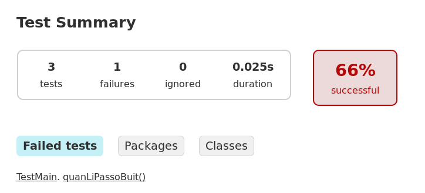
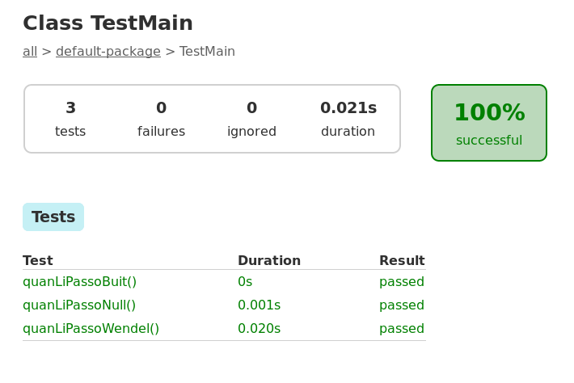

Aquí també tests¶
Abans de continuar, recordem que un dels punts de desenvolupament que estem fent més èmfasi en aquest curs és en la validació automàtica dels nostres programes.
Un altre cop, el Gradle ens ho posarà fàcil aquí.
Fixa’t on espera Gradle els tests:
.
├── build.gradle
└── src/
├── main/
│ └── java/
│ └── Main.java
└── test/
└── java/
└── TestMain.java
Doncs vinga, donem-li tests:
5 6 7 8 9 10 11 12 13 14 15 16 17 18 19 20 21 22 23 24 25 26 27 28 29 30 31 | import org.junit.jupiter.api.Test;
import static org.junit.jupiter.api.Assertions.*;
public class TestMain{
@Test
public void quanLiPassoWendel() {
String nom = "Wendel";
String esperat = "Hola <b>Wendel</b> des de Spark";
String obtingut = Main.composaSalutacio(nom);
assertEquals(esperat, obtingut);
}
@Test
public void quanLiPassoNull() {
String nom = null;
String esperat = "Hola <b>món</b> des de Spark";
String obtingut = Main.composaSalutacio(nom);
assertEquals(esperat, obtingut);
}
@Test
public void quanLiPassoBuit() {
String nom = "";
String esperat = "Hola <b>món</b> des de Spark";
String obtingut = Main.composaSalutacio(nom);
assertEquals(esperat, obtingut);
}
}
|
En tenim tres tests per comprovar el correcte funcionament del mètode
composaSalutacio().
També podríem comprovar que realment la ruta estigui retornant el que esperem, però de moment ens centrarem en la part de codi que correspon al nostre model.
Els tres tests són:
cas que passem un nom com ara Wendel (el fundador de Spark)
cas que passem un valor
nullcom correspondria quan no especifiquemnoma la url (http://localhost:4567/holaspark)cas que passem un valor buit com correspondria quan fem http://localhost:4567/holaspark?nom=
Per executar els tests farem simplement:
1 2 3 4 5 6 7 8 9 10 11 12 13 14 | $ gradle test
> Task :test FAILED
TestMain > quanLiPassoBuit() FAILED
org.opentest4j.AssertionFailedError at TestMain.java:29
3 tests completed, 1 failed
FAILURE: Build failed with an exception.
* What went wrong:
Execution failed for task ':test'.
> There were failing tests. See the report at: file:///home/moises/tmp/holaspark/build/reports/tests/test/index.html
…
|
Aquesta comanda ens respon amb un missatge d’error indicant que hi ha un test que ha fallat.
En concret, ens diu que el test que no ha anat bé ha estat quanLiPassoBuit().
La sortida també ens ofereix una url (mira la línia 13) que, en el teu cas, probablement canviarà amb el nom de la teva carpeta home. Si l’obres, trobaràs quelcom similar a aquesta imatge:
Es tracta d’un informe en HTML força complet de com ha anat el test. Ens diu que ha executat tres tests però que un d’ells no ha passat. A més, ens ofereix un enllaç al test que ha fallat. Si el seguim ens trobem la sortida habitual de JUnit:

Fixa’t que a la primera línia ja ens informa què esperava i què se n’ha trobat.
… expected: <Hola <b>món</b> des de Spark> but was: <Hola <b></b> des de Spark>
Sembla que el nostre codi no estava preparat per Strings buits, oi?
Res, arreglem-lo en un moment:
7 8 9 10 11 12 13 14 15 16 17 18 19 20 21 22 | import static spark.Spark.get;
public class Main {
static String composaSalutacio(String nom) {
if (nom == null || nom.isEmpty()) {
nom = "món";
}
return "Hola <b>" + nom + "</b> des de Spark";
}
public static void main(String[] args) {
get("/holaspark",
(rq, rs) -> composaSalutacio(rq.queryParams("nom")));
}
}
|
En tornar a executar els tests, aquest cop funciona perfectament. Si consultem la url amb els resultats del test ens trobem un maquíssim 100% d’èxit!
Exercici 6. Tests per l’aplicació de capicua¶
Tornem al projecte de capicua.
En aquesta ocasió afegirem tests a la nostra aplicació. Els tests seran molt similars als que hem vist a l’exemple de l’aplicació per saludar. En concret comprovaran:
si la paraula és «tururut», llavors el resultat serà la paraula «tururut»
si la paraula és la cadena «roma», el resultat serà la paraula «romamor»
si la paraula és
null, llavors el resultat serà la paraula «anna»si la paraula és la cadena buida, el resultat serà la paraula «anna»